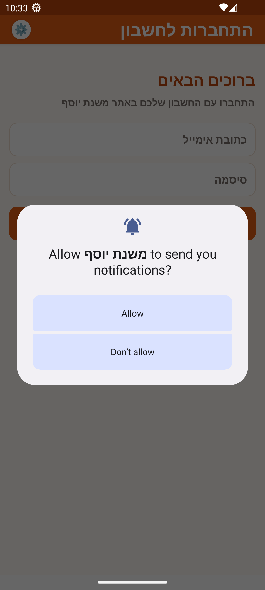
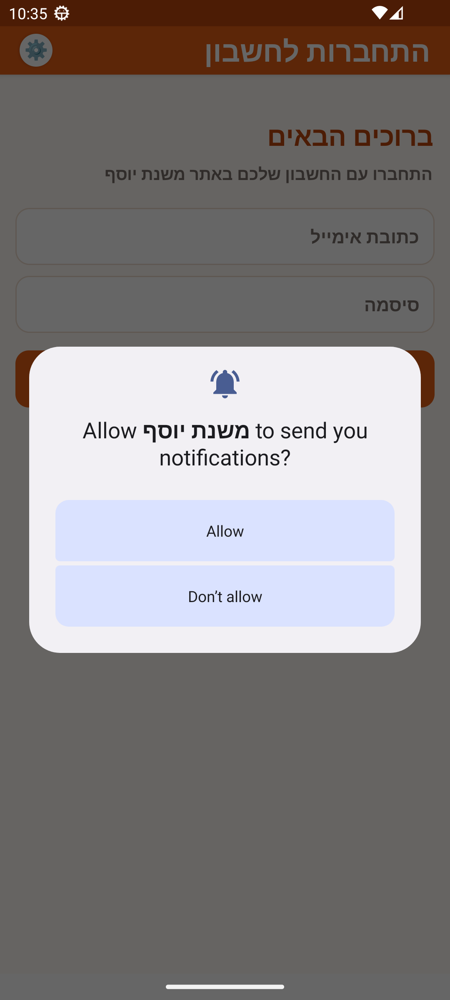

Package org.mishnatyosef.mobile · {"model": "sdk_gphone64_x86_64", "sdk": "33", "release": "13", "abi": "x86_64", "locale": "", "screen": "1080x2400"}
| # | Action | Detail | Result | Error |
|---|---|---|---|---|
| 1 | clear_data | passed | ||
| 2 | shell | cmd='appops set org.mishnatyosef.mobile SCHEDULE_EXACT_ALARM allow', ignore_errors=True | passed | |
| 3 | launch | passed | ||
| 4 | wait_for | text='ברוכים הבאים' | failed | element not found within 30s: text='ברוכים הבאים' |
| 5 | tap | desc='פתיחת הגדרות ופעולות' | failed | element not found within 10s: desc='פתיחת הגדרות ופעולות' |
| 6 | wait_for | text='פעולות מהירות' | failed | element not found within 8s: text='פעולות מהירות' |
| 7 | screenshot | name='day-dialog' | passed | |
| 8 | tap | text='מצב לילה' | failed | element not found within 10s: text='מצב לילה' |
| 9 | wait | seconds=1.5 | passed | |
| 10 | assert_text | button label flipped | failed | element not found within 5s: text='מצב יום' |
| 11 | assert_text | dialog still open | failed | element not found within 5s: text='פעולות מהירות' |
| 12 | screenshot | name='night-dialog' | passed | |
| 13 | tap | desc='סגירת חלון הפעולות' | failed | element not found within 10s: desc='סגירת חלון הפעולות' |
| 14 | assert_not_visible | text='פעולות מהירות' | passed | |
| 15 | screenshot | name='night-login-screen' | passed | |
| 16 | tap | desc='פתיחת הגדרות ופעולות' | failed | element not found within 10s: desc='פתיחת הגדרות ופעולות' |
| 17 | wait_for | text='פעולות מהירות' | failed | element not found within 8s: text='פעולות מהירות' |
| 18 | screenshot | name='night-dialog-reopened' | passed | |
| 19 | tap | text='מצב יום' | failed | element not found within 10s: text='מצב יום' |
| 20 | wait | seconds=1.5 | passed | |
| 21 | assert_text | text='מצב לילה' | failed | element not found within 5s: text='מצב לילה' |
| 22 | screenshot | name='back-to-day-dialog' | passed | |
| 23 | tap | desc='סגירת חלון הפעולות' | failed | element not found within 10s: desc='סגירת חלון הפעולות' |
| 24 | assert_foreground | failed | foreground app is com.google.android.permissioncontroller, expected org.mishnatyosef.mobile |

